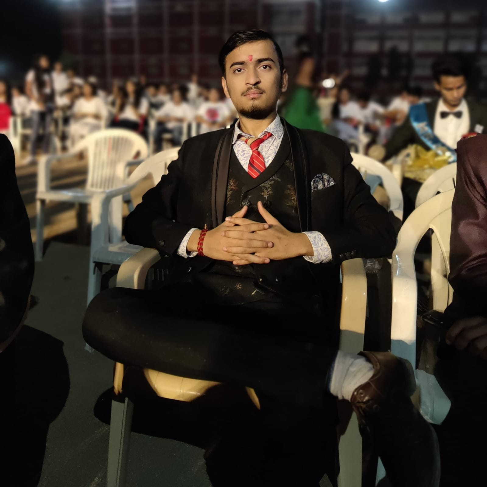

Contact:@nshulkotwal12@gmail.com
Linkedin:www.linkedin.com
Github:github.com
Facebook: facebook.com
Instagram: Instagram.com
|  | I am passionate software engineer with problem-solving and algorithmic thinking learner . I love to explore verious technologies and frameworks to develop efficient and stable solutions, with strong foundation in data structure and algorithms , I strive to create robust and optimised code. I am consatntly expanding my skills and staying up-to-date with the latest advancements in the fields of software development. Also I love to make websites plus i am constantly working on webdesining. |
Anshul kotwal
my interests of doing are understanding various of technologies present all around us and understand how they function whats the basic code inside it and playing football and chess are my favourite one in games
Jhansi Uttarpradesh